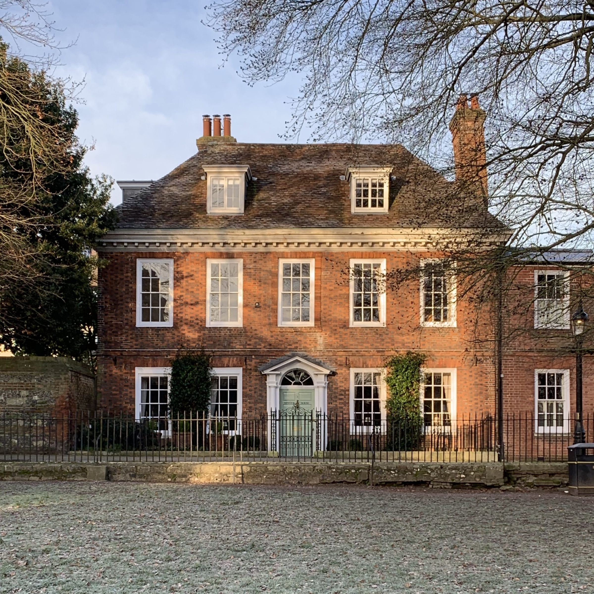
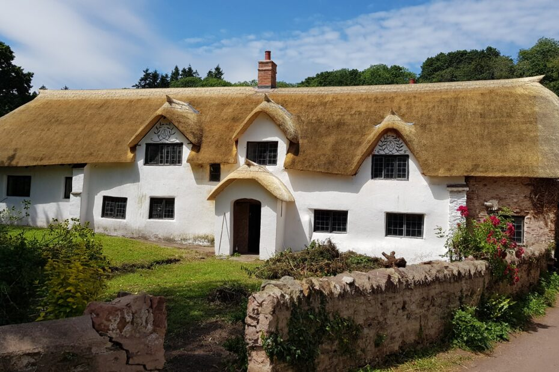
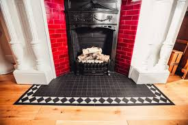
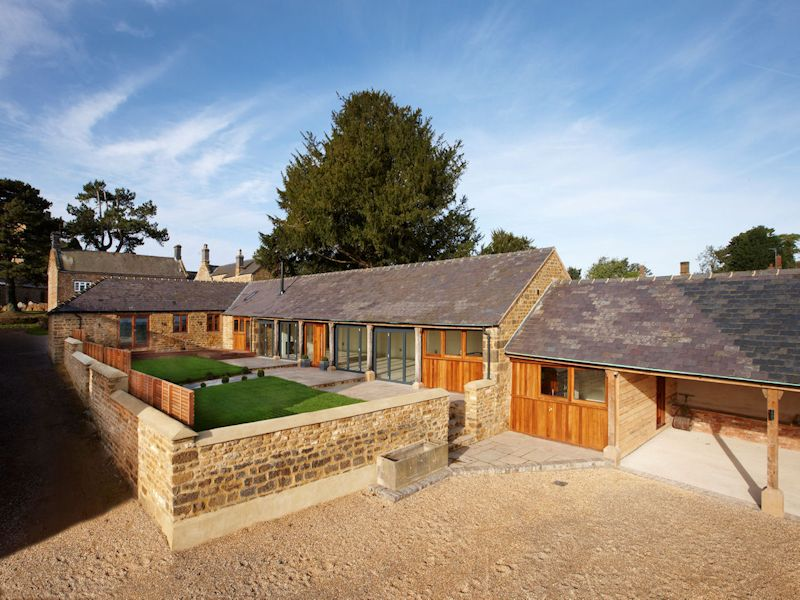

Property Restoration: Preserving Devon's Architectural Heritage
Specialist conservation and restoration services for period and damaged properties
Period Property Restoration
Sympathetic restoration of Devon's historic homes and buildings to their original glory.
- Structural timber frame repairs
- Original feature conservation
- Lime plaster and mortar work
- Stained glass window restoration
- Parquet floor refurbishment

Georgian townhouse complete restoration
Disaster Recovery Services
Emergency response and complete restoration for fire, flood, and storm damaged properties.
- 24/7 emergency call-out
- Structural drying systems
- Soot and smoke remediation
- Mold treatment and prevention
- Insurance claim assistance

Complete recovery after severe flooding

Devon thatched cottage restoration

Victorian fireplace conservation

Grade II* listed building project
Need Expert Property Restoration?
Contact our Devon specialists for sensitive, high-quality restoration services.
Start Your Restoration Project